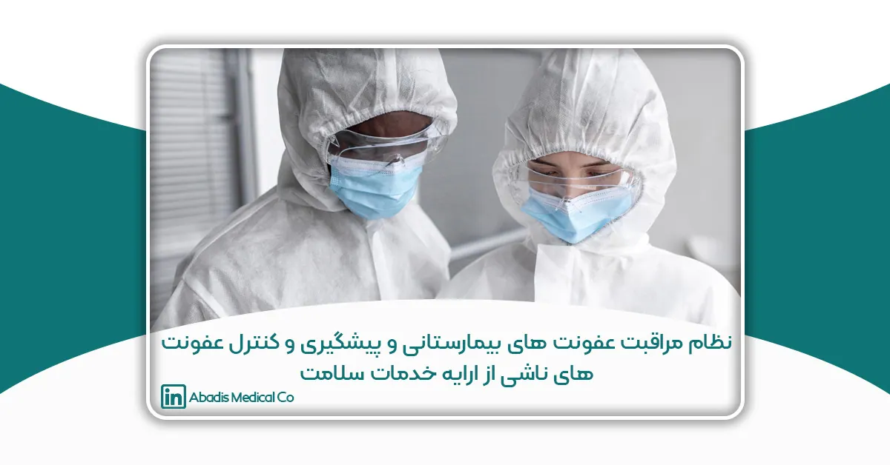
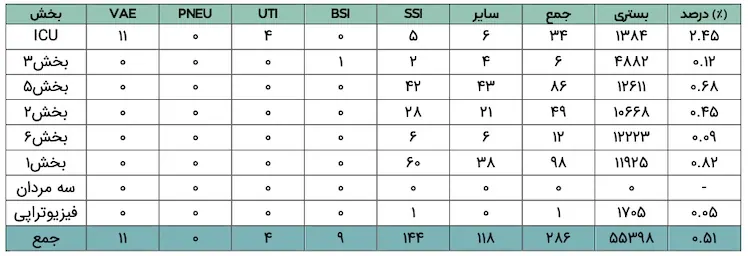
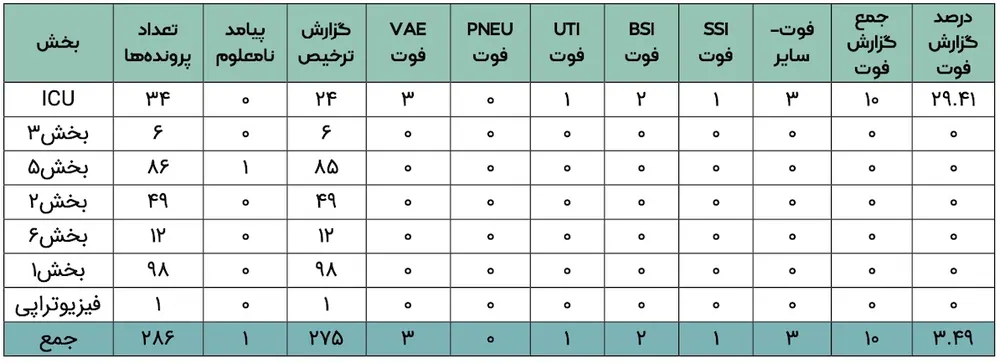
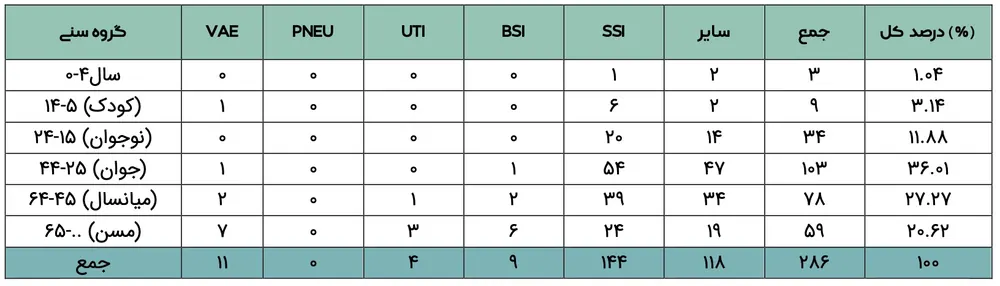
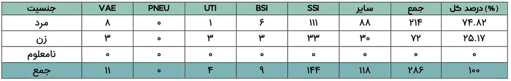
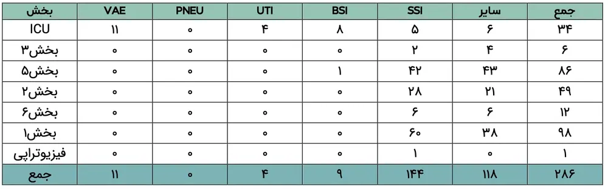
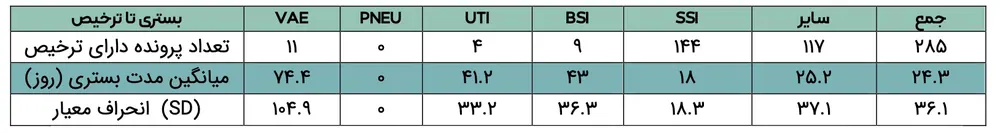
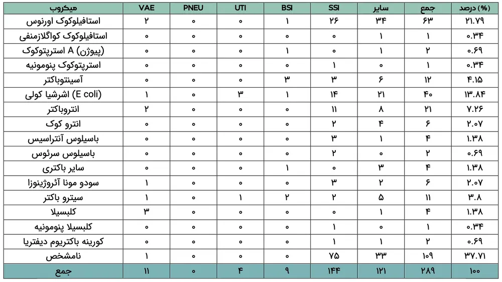
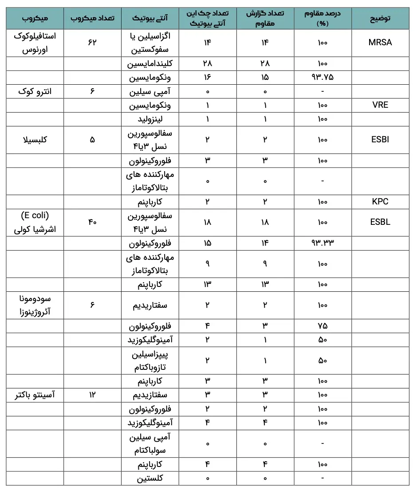

مقدمه
عفونت های مرتبط با خدمات/ مراقبت سلامت مشکلی مشترک در تمام کشورهای دنیا بوده و به عنوان تهدیدی مداوم برای عملکرد موثر و صحیح مراکز ارائه دهنده خدمات سلامت می باشند و می توانند به طور ناخواسته منجر به کاهش کیفیت خدمات سلامت شوند(1). در متون پزشکی گاهی این عفونت ها را عفونت های اکتسابی از بیمارستان Hospital Aquired infection (HAI) می نامند. اما اصطلاح رایج آن عفونت های نوزوکومیال (Nosocomial infections) می باشد. اصطلاح Nosocomial از کلمات یونانیNosos (بیماری) و Komeion (مواظبت) منشاء می گیرد. سازمان جهانی بهداشت تعریف جامع تری از این عفونت ها ارائه کرده و آنها را عفونت های ناشی از مراقبتهای بهداشتی(Health care-associated infection ) می خواند(6). همزمان با افزایش جمعیت، افزایش تعداد مراکز ارائه خدمات/مراقبت های سلامت، افزایش در تنوع خدمات درمانی، افزایش طول عمر و امید به زندگی در سراسر جهان، مشکل عفونت های ناشی از ارائه خدمات / مراقبت سلامت به یک اولویت مهم سلامت تبدیل شده است. بر اساس گزارش سازمان بهداشت جهانی به طور کلی از هر11 نفری که تحت مراقبت سلامت قرار می گیرند، یک نفر به عفونت مبتلا می شود. (1) بطوریکه در کشورهای توسعه یافته 7% و در کشورهای در حال توسعه 10% بیماران حداقل به یک نوع از عفونت های بیمارستانی مبتلا شده و ابتلا به این عفونت ها تقریبا در 10% از مبتلایان به مرگ منجر می شود(2). به طور کلی7/8درصد بیماران بستری شده، به عفونت های بیمارستانی مبتلا می شوند.(4) شیوع عفونت های بیمارستانی در ایران از9/1تا25درصد گزارش شده است (5).عفونت های بیمارستانی، علاوه بر افزایش طول مدت بستری در بیمارستان، افزایش مقاومت های میکروبی، افزایش مرگ و میر و عوارض بیماری ها، منجر به تحمیل بار اقتصادی سنگینی به بیماران و مراکز ارائه دهنده خدمات سلامت می شوند. درصد قابل توجهی از عفونت های موضع جراحی می تواند ناشی از میکروب های مقاوم به آنتی بیوتیک باشد(1). مطالعات اپیدمیولوژیک عوامل مرتبط با افزایش احتمال ابتلا به عفونت های بیمارستانی را سن بیمار ( چچدر سالمندان و نوزادان شایع تر است) ،وجود بیماری های زمینه ای، طول مدت بستری، ضعف سیستم ایمنی، اقدامات تشخیصی درمانی تهاجمی مانند کاتتر ادراری و یا پنومونی ناشی از ونتیلاتور، عنوان کرده اند. در حالی که برنامه های موثر کنترل عفونت می توانند انتشار عفونت های ناشی از ارائه خدمات / مراقبت سلامت، مرگ و میر، مقاومت ها در مقابل آنتی بیوتیکها و تحمیل هزینه ها میتوان خطر عفونت های بیمارستانی را کاهش داد(4) باید توجه داشت که مهم ترین عامل بیماری زا در ایجاد عفونت بیمارستانی، میکروارگانیسم های موجود در بدن بیماران است که به صورت تماس بیمار با بیمار دیگر و یا توسط کارکنان بهداشتی درمانی در بیمارستان منتقل می شود(4).بطوریکه عوامل مولد عفونت های بیمارستانی عمدتا از طریق هوای ورودی به اتاقها، سایر بیماران بستری در اتاق، پرستاران، کادر پزشکی و یا همراهان و عیادت کنندگان و بالاخره از راه لوازم مورد استفاده بیمار و یا وسایل تهاجمی نظیر لوازم جراحی، کتترها و غیره منتقل می شود.برآورد شده است که 25 الی 50 درصد عفونت های بیمارستانی ماحل تاثیر میکروفلور طبیعی و وسایل تهاجمی هستند .
این میکروارگانیسم ها معمولا میزبان های حساس، سالمندان و یا افراد دچار بیماری های زمینه ای و نقص ایمنی را بیش از سایرین گرفتار می نمایند(16).
با توجه به تعاریف بیان شده، عفونت بیمارستانی به عفونتی اطلاق می شود که 48 الی 72 ساعت پس از بستری بیمار رخ داده(3) و بیمار در حین بستری این عفونت را نداشته و در دوره نهفته آن هم قرار نداشته باشد(4) عفونتها به 13 گروه اصلی تقسیم بندی می شوند و چهار نوع عفونت شایع بیمارستانی که 81 درصد کل عفونت های بیمارستانی را شامل می شود،عبارتند از: عفونت های دستگاه ادراری، عفونت های دستگاه تنفسی تحتانی یا پنومونی، عفونت ناشی از زخم جراحی و عفونت دستگاه گردش خون. عفونت ادراری شایعترین و پنومونی کشنده ترین عفونت بیمارستانی محسوب می شود(5).
با توجه به اهمیت عفونت های بیمارستانی و دستیابی به راهکارهایی جهت کنترل آن، توجه به این امر، موجب کاهش مرگ و میرو عوارض عفونت های بیمارستانی، افزایش تامین و حفظ و ارتقای سلامت افراد جامعه و رضایتمندی از سیستم خدمات درمانی میشود. لذا با توجه به اهمیت بالینی این مشکل و عدم وجود آمار دقیق عفونت های بیمارستانی علی الخصوص دربیمارستان های ارتوپدی، این پژوهش صورت پذیرفت. نتایج این مطالعه می تواند ضمن مقایسه با آمار های بین المللی و کشف اشکالات موجود در سیستم خدمات رسانی، زمینه ارائه راه حل منطقی کاهش مشکل فوق را فراهم آورد.
تاریخچه کنترل عفونت های بیمارستانی در دنیا بسیار قدیمی است و از زمانی آغاز می شود که برای مراقبت و درمان بیماران از قرن چهارم میلادی در نقاط مختلف دنیا بیمارستان تأسیس گردید. عفونت های بیمارستانی همزمان با گسترش بیمارستانها همواره یکی از مشکلات عمده بهداشتی و درمانی بوده و با افزایش مدت اقامت بیمار در بیمارستان موجب افزایش ابتلاء و مرگ و میر از این عفونتها شده و در نتیجه هزینه های بیمارستانی را به شدت افزایش می دهد .عفونت های بیمارستانی روز به روز اهمیت بیشتری یافته و نظام سلامت کشورها را به چالشی جدی فرا می خوانند .افزایش بیمارستان ها، ظهور بیماریهای بازپدید و نوپدید، افزایش روزافزون مقاومت های میکروبی و نیاز به خدمات متنوع پزشکی بروز عفونتهای ناشی از خدمات درمانی Health care-associated infection را اجتناب ناپذیر می سازد(6).
براساس آماری که سازمان بهداشت جهانی گزارش داده است، سالیانه 1.7میلیون عفونت بیمارستانی روی می دهد و این عفونتها سالانه موجب 99هزار مرگ و حدود26 تا 32بیلیون دلار هزینه به جامعه تحمیل می کند. در مطالعه ای که تحت نظر سازمان بهداشت جهانی بر روی 55 بیمارستان از 12 کشوراز بیماران دنیا انجام گرفت، نشان داده شد که 8.7 بستری شده دربیمارستان به عفونتهای بیمارستانی مبتلا گردیده اند. طی دو دهه اخیر آمار ابتلا به به این عفونتها 36% افزایش یافته است(3).
تاکنون در کشور بررسی ها و مطالعات پراکند های در مراکز دانشگاهی و بیمارستان ها در زمینه بررسی وضعیت این عفونت ها انجام شده است، به عنوان مثال: یک مطالعه توصیفی- تحلیلی آینده نگر و مقطعی در نیمه دوم سال 1381 به مدت 6 ماه و بر روی تمام بیماران بستری شده زیر 12 سال در بیمارستان حضرت رسول اکرم (ص) در تهران با روش استاندارد NNIS انجام گرفت. میزان کلی عفونت بیمارستانی در این گروه 8.5% برآورد شد بیشترین میزان عفونت از بخشPICU گزارش شد(6).
درمطالعه امینی و همکـاران در بخـش مراقبـتهـای ویژه بیمارستان شهید مصطفی خمینی شـیوع عفونـت85/10درصدگزارش شد ،بیشـترین میـزان عفونـت مربوط به عفونت ریه3/77درصد،عفونـت ادراری7/18درصد، محـل جراحـی7/2درصـد و عفونـت خون3/1درصد بود(9).
در یک مطالعه در کرمان از 4617 مورد بررسی شده 376 کشت مثبت در بیماران مبتلا به عفونت بیمارستانی پیدا شد که میزان کشت مثبت14.8 % بود و 44 % آنها مربوط به کودکان بود. استافیلوکوک، اشرشیاکولی و پسودوموناس به ترتیب شایع ترین جرم ها بودند(6).
در یک مطالعه با روش نظام مند و متا آنالیز انجام یافته در سال 1399، میزان عفونت های بیمارستانی 0.32 و 9.1% گزارش شده است(8).
در مطالعه درویش پور و همکاران در سال 92 اشاره شده است که عفونت های بیمارستانی در ایران نیز از 1.9 تا 25درصد گزارش شده است. همچنین در این مطالعه، بیان شده که میزان عفونت های بیمارستانی طی تحقیقی که Ghazvini انجام داده است ۱۰.۸۵٪ اعلام شده و در این بین شایعترین محل عفونت ریه و شایعترین علل میکروبی آسینتوباکترگزارش شده است(12).
در این مطالعه میزان عفونت های بیمارستانی از ابتدای سال 1400 الی پایان آذر ماه 1401 در این مرکز ، 0.51% بوده است.

طبق گزارش مرکز کنترل بیماری ها، عفونت های بیمارستانی سالانه موجب مرگ 2 میلیون نفر در بیمارستان های آمریکا شده است (11).در مطالعه ای دیگرمیزان مرگ در اثر عفونت های بیمارستانی در ایالات متحده آمریکا 80 هزار نفر اعلام شده به گونه ای که در این کشور هر روز 247 نفر بر اثر عفونت های بیمارستانی جان خود را از دست می دهند و از هر 136 بیمار بستری شده، یک نفر به علت عفونت بیمارستانی به شدت بیمار می شود.در کشورهای در حال توسعه سالانه 2 الی 4 میلیون عفونت بیمارستانی رخ می دهد و یازدهمین علت مرگ و میر و پنجمین علت مرگ و میر بیمارستانی محسوب می شود.این ارقام مربوط به مراکزی است که دارای سیستم فعال مراقبت و کنترل بوده و میتوان تصور نمود که بیمارستانهای کشور ما دارای آمار بالاتری است(17).
در انگلستان نیز سالانه 5000 مورد مرگ در سال با تشخیص عفونت های بیمارستانی ثبت شده است .بطوریکه در نتایج به دست آمده از مطالعات مختلف ، کشورهای توسعه یافته 11-2 درصد نرخ مرگ و میر ناشی از عفونت های بیمارستانی را دارا می باشند(7).
میزان مرگ و میر گزارش شده در 286 مورد مبتلا به عفونت های بیمارستانی در بازه زمانی ذکر شده در این مرکز 3.49% بوده است.

از عوامل مرتبط با افزایش احتمال ابتلا به عفونت های بیمارستانی سن بیمار مطرح شده است، بطوریکه مطالعه قنبری و همکاران در سال 1393، در قسمتهای مختلف بیمارستان شریعتی اصفهان، بیشترین میزان عفونت(6.46درصد) را در دامنه سـنی 80-60سال نشان داده است. افرادمسن به علت داشـتن سیستم ایمنی ضعیف،نسبت به عفونتها آسیب پـذیر بـــوده و احتمـــال عفونـــت بیمارســـتانی توســـط میکروارگانیسم های فرصت طلـب در آنهـا افـزایش می یابد(9). کودکان خردسال نیز به دلیلنابالغ و نارس بودن سیستم ایمنی، مستعد ابتلا به عفونت های بیمارستانی می باشند(10).
تایج به دست آمده از این مطالعه نشان داد که از102692 بستری در بخش های مختلف این مرکز، در بازه زمانی فروردین 1400 الی پایان آذر ماه 1401، 286مورد ابتلا وجود داشت که بیشترین درصد ابتلا به عفونت بیمارستانی مربوط به گروه سنی جوان (25 الی 44 سال) با 36.01% می باشد.

در مطالعه مجذوبی و همکاران در سال 97 نسبت مبتلایان به عفونت بیمارستان و جامعه از نظر جنسیت اختلاف آماری معناداری مشاهده نشده است. در مطالعه زمانزاد که مشابه با مطالعه فوق می باشد ،جامعه هدف صرفا زنان بودند، اما در مطالعه صادق زاده ،سهرابی و باراک نسبت زنان مبتلا به عفونت بیمارستانی بیشتر از مردان می باشد(19).
از نظر فراوانی عفونت به تفکیک جنسیت نیز از 286 مورد ابتلا به عفونت بیمارستانی ،72 مورد زن(17.25%) و 214 مورد مرد (74.82%)گزارش شده است.

عفونتهای ادراری، تنفسی، عفونت محل جراحی و عفونت خون از عمده ترین عفونتهای بیمارستانی هستند. عفونتهای ادراری شایعترین نوع عفونتهای بیمارستانی بوده که 80% با سوندگذاری در بیماران ارتباط دارد. عفونتهای تنفسی درگروههای مختلف بیماران رخ میدهد. مهمترین گروه، بیمارانی هستند که ازدستگاه تهویه مصنوعی در بخش مراقبتهای ویژه استفاده کرده که درآن میزان عفونت روزانه 3% گزارش شده است. عفونتهای خونی، نماینده بخش کوچکی ازعفونتهای بیمارستانی؛یعنی حدود5% میباشد، اما میزان مرگ و میربیش از 50% برای برخی ازمیکروارگانیسم ها را به خود اختصاص داده است. عفونت محل جراحی نیز به وفور رخ میدهد و بروز آن بین 15-5% برآورد شده که بسته به نوع عمل جراحی و وضعیت زمینه ای بیمارمتفاوت است. این عفونتها می توانند منافع بالقوه مداخلات جراحی را محدود سازند و بر هزینه های بیمارستان و طول اقامت بعد ازعمل (بین 20-3 روزاضافی)تأثیرگذارباشند(12).
همانطور که اشاره شد ،عفونت های بیمارستانی بر اساس محل درگیری انواع متنوعی دارند. از جمله شایعترین آنها عفونت مجاری ادراری، عفونت دستگاه تنفسی، باکتریمی، عفونتهای جلدی از جمله زخم جراحی و زخم سوختگی است(13).
در مطالعه کوهستانی و دوستان در سال 98، شایعترین عفونت بیمارستانی به ترتیب عفونت ادراری(39.76%)، مرتبط با ونتیلاتور(2092%)، جریان خون(20.71%) و عفونت پوست و بافت نرم( 0.7%) گزارش شده است(18).
در مطالعه رضایی اول در سال 1396 بیان شده است که از نظر اعضای درگیر در عفونت بیمارستانی، سیستم ادراری شایع ترین عضو درگیر است و بعد از آن سیستم تنفس، گردش خون، پوست و سایر اعضا قرار دارند(4).
در مطالعه ای شایعترین در بین انواع عفونت های بیمارستانی، عفونت ادراری با درصد 42% و پس از آن به ترتیب عفونت محل زخم جراحی 24%، پنومونی 15 تا 21 درصد و عفونت گردش خون یا باکتریمی 2 تا 11 درصد گزارش شده است(3).
در این مطالعه نیز 11مورد ( 84.3%)، عفونت مرتبط با ونتیلاتور ریه ،4 مورد (39.1%) عفونت ادراری ،9مورد (14.3%) عفونت خون و 144مورد (50.34%) عفونت محل جراحی گزارش شده است.
عفونتهای بیمارستانی همزمان با گسترش بیمارستانها، به عنوان یکی از مشکلات عمده بهداشتی درمانی مطرح بوده و با افزایش مدت اقامت بیمار در بیمارستان موجب افزایش ابتلا و مرگ و میر از این عفونتها شده و در نتیجه هزینه های بیمارستانی را به شدت افزایش خواهد داد. میزان بروز عفونتهای بیمارستانی در بخشهای مختلف بیمارستان متفاوت است و نشان میدهد با وجودی که ایجاد بخشهای مراقبتهای ویژه منجر به افزایش نرخ بهبودی و کاهش مرگ ومیر شده است، اما از طرف دیگر طولانی شدن مدت بستری این بیماران و استفاده از انواع دستگاههای نگهدارنده باعث افزایش عفونت بیمارستانی در این بخشها شده که خود به علت واکنش متابولیک و ایمنولوژیک نارسایی سایر اندامها را به دنبال دارد(13).
جدا از اهمیت آسیب ناشی از مراقبتهای پزشکی یا پرستاری؛ عفونت بیمارستانی یک علت شایع برای عوارض وخیم تر، مرگ و میر بیشتر و اقامت طولانی تر، ناتوانی طولانی تر، افزایش هزینه ها، افزایش مقاومت میکروبی(21) در بیمارستان است .چنانچه طبق گزارش اداره سلامت ایالات متحده آمریکا این عفونتها سالانه با بار هزینه ای حدود ۱۰-۵ میلیارد دلار در بخش مراقبتهای بهداشتی ،باعث مرگ و میر 99 هزار نفر می شوند(14).
در این مطالعه میانگین مدت بستری تا ترخیص بیماران با عفونت های بیمارستانی ۲۴.۳ روز می باشد. بیشترین طول بستری مربوط به بیماران با عفونتهای خون می باشد که ضمن بررسی بیماران بستری در ICU می باشند که معمولا جهت چندین مشکل تحت درمان بوده و علاوه بر آنها با اضافه شدن عفونت بیمارستانی طول مدت بستری طولانی دارند.

در مطالعه مجذوبی و همکاران در سال 97، ۵۰ درصد از موارد عفونت بیمارستانی در11روز نخست و ۷۵ درصد طی ۲۰ روز از زمان بستری اتفاق افتاده بودند.
در مطالعه حاضر میانگین مدت بستری تا ایجاد عفونت ۴.۹ روز می باشد.

از جمله میکروارگانیسمهای مهم در ایجاد عفونت های بیمارستانی کوکوس های گرم مثبت نظیر استافیلوکوکوس، استرپتوکوکوس و آنتروکوک و نیز باسیل های گرم منفی همچون آسینتوباکتر ،سودوموناس اشراشیاکلی کلبسیلا پروتئوس سراشیا و آنتروباکتر هستند که امروزه در برابر بسیاری از آنتی بیوتیکهای رایج مقاوم شده اند.
در مطالعه کوهستانی و همکاران در سال 98، از نظر عامل ایجادکننده عفونت، شایع ترین عامل ایجادکننده عفونت بیمارستانی اشراشیاکلی بوده است و بعداز آن، کلبسیلا و آسینتو باکتر قرار دارد. در مطالعه رحمانیان، سهرابی، لاری پور، قنبری و مانچینی نیز اشراشیاکلی بیشترین عامل ایجادکننده عفونت بوده است.در مطالعات دیگر استافیلوکوک کواگولاز منفی، کلبسیلا، سودوموناآئروژینوزا و استافیلوکوک اورئوس بیشترین عامل ایجاد کننده عفونت بیمارستانی بوده اند(18).
در این مرکز نیز در بازه زمانی مطالعه، به ترتیب استافیلوکوکوس اورئوس(٪۲۱.۷۹) ، اشراشیاکلی(٪۱۳.۸۴)، آسینتوباکتر (٪۴.۱۵) ، آنتروباکتر (٪۷.۲۶) ، سیتروباکتر(٪۳.۸) بیشترین عامل ایجاد کننده عفونت بیمارستانی بوده اند.

از دهه80میلادی تاکنون میکروارگانیسمهـای گـرم مثبـت بـه خصوص استافیلوکوکوس اورئوس به عنوان عامل اصلی عفونـت های بیمارستانی معرفی شده انـد. اسـتافیلوکوکوس اورئـوس عامل ایجاد طیف وسیعی از بیماریها، مانند عفونتهای خفیـف پوستی و بیماریهای سیسـتمیک تهدیـد کننـده حیـات ماننـد سپتیسمی، اندوکاردیت، پنومونی و آبسـه هـای عمیـق پوسـتی بیمارستانی و اکتسابی از جامعه است و نسبت به طیـف وسـیعی از آنتیب یوتیک ها از جمله بتالاکتامها،ماکرولیـدهاو …. مقاومـت نشان میدهد. کانونهای عفونت ناشی از این باکتری به طور عمده زخـم، ترشحات دستگاه تنفسی و پوست هسـتند.
در مطالعه امیری در سال 97، در تست حساسیت ضد میکروبی بــه روش دیســک دیفیــوژن بــر روی 67ایزولــه استافیلوکوکوس اورئوس،مقاومت ایزوله ها نسـبت بـه 6 آنتـی بیوتیک مختلف براسـاس جـدولCLSIبـه ترتیـب زیـر بـوده است:
پنی سیلین100 درصد، اگزاسیلین7/44درصد، ونکومایسـین80/38درصد، تتراسایکلین32/37درصد، جنتامایسین37/25 درصدوکلرامفنیکل (5/10درصد) (21).
در مطالعه مسگریان و همکاران در سال 1400، هریک از میکرارگانیسمها بر اساس حساسیت یا مقاومت به یک آنتی بیوتیک خاص (به روش دیسک دیفیوژن) بررسی شدند و نشان داده شد که از31کشت مثبت سودومونا،16مورد به کارباپنمها مقاوم بودند.
(53درصد)، از94کشت مثبت آسینتوباکتر70مورد به کارباپنمها مقاوم بودند( 74درصد)، از34کشت مثبتE-coli7مورد به کارباپنمها مقاوم بودند) 20درصد( و از27کشت مثبت کلبسیلا12مورد به کارباپنمها مقاوم بودند(45%). در مطالعه ماهلر و همکارانش در آلمان، 5171مورد باسیل گرم منفی مقاوم به چند دارو پیدا شد که16%آنها به کارباپنمها مقاوم بودند(5).
در مطالعه یعقوبی و همکاران در سال 98، به ترتیب بیشترین مقاومت آنتی بیوتیکی به آسینتوباکتر، سودوموناس، انتروباکتر، کلبسیلا، اشریشیاکلی و استافیلوکوکوس اروئوس مربوط بود. آسینتوباکتر بیشترین فراوانی را بین شش میکروارگانیسم مورد مطالعه داشت. بر اساس نتایج این بررسی، آسینتوباکتر، حداکثر مقاومت را به ترتیب به سفازولین، آمپی سیلین، سفالکسین و کمترین مقاومت را بهتوبرامایسین داشت در حالی که این باکتری بیشترین حساسیت را به ترتیب به افلوکساسین و آمیکاسین نشان داده است(7).
مقاومت آنتی بیوتیکی در عفونت های بیمارستانی در حال افزایش است(19)، به ویژه استفاده بیش از حد از آنتی بیوتیکها در سالهای اخیر و به خصوص در بخش های مراقبت ویژه منجر به پیدایش ایزوله های مقاوم شده است.عفونت های بیمارستانی مقاوم به چند دارو همواره با افزایش عوارض، مرگ و میر و هزینه های مراقبت های بهداشتی همراه است و سالانه تقریبا 35000 مرگ به واسطه آن ها رخ می دهد(20) .
در مطالعه سویه و همکاران بیشترین مقاومت برای باکتریهای گرم منفی در مقابل بتالاکتامها گزارش شده است. مقاومت نسبت به کوتریموکسازول نیز بالا بوده است. در مطالعه مجذوبی و همکاران در سال 97، مقاومت باکتریهای گرم منفی به غیر از سایر باکتریها( انتروباکتر) نسبت به بتالاکتامها بالای 50 درصد بوده است. همچنین بین سفالوسپورینها بالاترین مقاومت نسبت به سفتریاکسون و کمترین مقاومت نسبت به سفتی زوکسیم گزارش شده است و مقاومت به ایمی پنم بیشتر از40درصد بوده است.بطورکلی میکروارگانیسم های شایع عفونت های بیمارستانی بالاترین مقاومت را نسبت به نالیدیکسیک اسید، کارینی سیلین، داکسی سایکلین و کوتریموکسازول دارند اهمیت عدم تجویز بی رویه آنتی بیوتیک توسط پزشکان مشخص میشود(19).
در این مطالعه نیز هریک از میکروارگانیسمها بر اساس حساسیت یا مقاومت به یک آنتی بیوتیک خاص (به روش دیسک دیفیوژن) بررسی شدند و نشان داده شد که استافیلوکوک اورئوس مقاومت 100 درصدی به اگزاسیلین یا سفوکستین و کلیندامایسین ،93.75 درصد به ونکومایسین ،اشرشیا کولی مقاومت 100 درصدی به سفالوسپورین نسل 3یا 4و همچنین مهارکننده های بتالاکتاماز ،مقاومت 93.3 درصدی به فلوروکینولون نشان داده است.

با توجه به نتایج این مطالعه می توان اظهار داشت عفونت بیمارستانی یکی از معضلات درمانی رو به افزایش است، که باید پرسنل درمان و افراد دخیل در امر مهم درمان به کنترل و پیشگیری این مهم توجهات لازم را به عمل آورند و با انجام استانداردهای لازم در زمینه کنترل عفونت بیمارستانی از افزایش روزافزون آن پیشگیری شود و با توجه به اثرات زیان بار اقتصادی و افزایش بیماری وقوع آن را تا حدی کنترل نمایند. از بین روش های پیشگیری از عفونت بیمارستانی، دست شستن پرسنل، رعایت استانداردهای کنترل عفونت و افزایش آگاهی پرسنل از اهمیت قابل توجهی برخوردار بودند .عفونت بیمارستانی یک جزء غیر قابل انکار از مراکز بهداشتی درمانی بوده و رعایت اصول مراقبتی، هدف اصلی برای جلوگیری و کنترل آن و دلیل عمده ای در طرح ریزی برنامه کنترل عفونت میباشد.